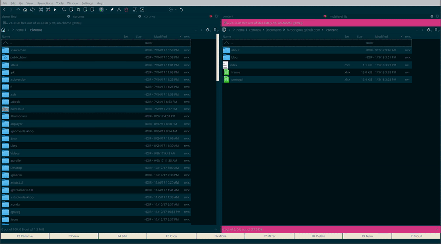

It’s lists all the way down, part 2: We need to go deeper
Shortly after my previous blog post, I saw this tweet on my timeline:
The purrr resolution for 2018 - learn at least one purrr function per week - is officially launched with encouragement and inspiration from @statwonk and @hadleywickham. We start with modify_depth: https://t.co/dCMnSHP7Pl. Please join to learn and share. #rstats
— Isabella R. Ghement (@IsabellaGhement) January 3, 2018
This is a great initiative, and a big coincidence, as I just had blogged about nested lists and how to map over them. I also said this in my previous blog post:
There is also another function that you might want to study, modify_depth() which solves related issues but I will end the blog post here. I might talk about it in a future blog post.
And so after I got this reply from @IsabellaGhement:
Bruno, I would love it if you would chime in with an explicit contrast between nested map calls (which I personally find a bit clunky) and alternatives. In other words, present solutions side-by-side and highlight pros and cons. That would be very useful! 🤗
— Isabella R. Ghement (@IsabellaGhement) January 4, 2018
What else was I supposed to do than blog about purrr::modify_depth()?
Bear in mind that I was not really familiar with this function before writing my last blog post; and even then, I decided to keep it for another blog post, which is this one. Which came much faster than what I had originally planned. So I might have missed some functionality; if that’s the case don’t hesitate to tweet me an example or send me an email! (bruno at brodrigues dot co)
So what is this blog post about? It’s about lists, nested lists, and some things that you can do with them. Let’s use the same example as in my last post:
library(tidyverse)data(mtcars)
nice_function = function(df, param1, param2){
df = df %>%
filter(cyl == param1, am == param2) %>%
mutate(result = mpg * param1 * (2 - param2))
return(df)
}
nice_function(mtcars, 4, 0)## mpg cyl disp hp drat wt qsec vs am gear carb result
## 1 24.4 4 146.7 62 3.69 3.190 20.00 1 0 4 2 195.2
## 2 22.8 4 140.8 95 3.92 3.150 22.90 1 0 4 2 182.4
## 3 21.5 4 120.1 97 3.70 2.465 20.01 1 0 3 1 172.0values_cyl = c(4, 6, 8)
values_am = c(0, 1)
Now that we’re here, we would like to apply nice_function() to each element of values_cyl and values_am. In essence, loop over these values. But because loops are not really easy to manipulate, (as explained, in part, here) I use the map* family of functions included in purrr (When I teach R, I only show loops in the advanced topics chapter of my notes). So let’s “loop” over values_cyl and values_am with map() (and not map_df(); there is a reason for this, bear with me):
(result = map(values_am, ~map(values_cyl, nice_function, df = mtcars, param2 = .)))## [[1]]
## [[1]][[1]]
## mpg cyl disp hp drat wt qsec vs am gear carb result
## 1 24.4 4 146.7 62 3.69 3.190 20.00 1 0 4 2 195.2
## 2 22.8 4 140.8 95 3.92 3.150 22.90 1 0 4 2 182.4
## 3 21.5 4 120.1 97 3.70 2.465 20.01 1 0 3 1 172.0
##
## [[1]][[2]]
## mpg cyl disp hp drat wt qsec vs am gear carb result
## 1 21.4 6 258.0 110 3.08 3.215 19.44 1 0 3 1 256.8
## 2 18.1 6 225.0 105 2.76 3.460 20.22 1 0 3 1 217.2
## 3 19.2 6 167.6 123 3.92 3.440 18.30 1 0 4 4 230.4
## 4 17.8 6 167.6 123 3.92 3.440 18.90 1 0 4 4 213.6
##
## [[1]][[3]]
## mpg cyl disp hp drat wt qsec vs am gear carb result
## 1 18.7 8 360.0 175 3.15 3.440 17.02 0 0 3 2 299.2
## 2 14.3 8 360.0 245 3.21 3.570 15.84 0 0 3 4 228.8
## 3 16.4 8 275.8 180 3.07 4.070 17.40 0 0 3 3 262.4
## 4 17.3 8 275.8 180 3.07 3.730 17.60 0 0 3 3 276.8
## 5 15.2 8 275.8 180 3.07 3.780 18.00 0 0 3 3 243.2
## 6 10.4 8 472.0 205 2.93 5.250 17.98 0 0 3 4 166.4
## 7 10.4 8 460.0 215 3.00 5.424 17.82 0 0 3 4 166.4
## 8 14.7 8 440.0 230 3.23 5.345 17.42 0 0 3 4 235.2
## 9 15.5 8 318.0 150 2.76 3.520 16.87 0 0 3 2 248.0
## 10 15.2 8 304.0 150 3.15 3.435 17.30 0 0 3 2 243.2
## 11 13.3 8 350.0 245 3.73 3.840 15.41 0 0 3 4 212.8
## 12 19.2 8 400.0 175 3.08 3.845 17.05 0 0 3 2 307.2
##
##
## [[2]]
## [[2]][[1]]
## mpg cyl disp hp drat wt qsec vs am gear carb result
## 1 22.8 4 108.0 93 3.85 2.320 18.61 1 1 4 1 91.2
## 2 32.4 4 78.7 66 4.08 2.200 19.47 1 1 4 1 129.6
## 3 30.4 4 75.7 52 4.93 1.615 18.52 1 1 4 2 121.6
## 4 33.9 4 71.1 65 4.22 1.835 19.90 1 1 4 1 135.6
## 5 27.3 4 79.0 66 4.08 1.935 18.90 1 1 4 1 109.2
## 6 26.0 4 120.3 91 4.43 2.140 16.70 0 1 5 2 104.0
## 7 30.4 4 95.1 113 3.77 1.513 16.90 1 1 5 2 121.6
## 8 21.4 4 121.0 109 4.11 2.780 18.60 1 1 4 2 85.6
##
## [[2]][[2]]
## mpg cyl disp hp drat wt qsec vs am gear carb result
## 1 21.0 6 160 110 3.90 2.620 16.46 0 1 4 4 126.0
## 2 21.0 6 160 110 3.90 2.875 17.02 0 1 4 4 126.0
## 3 19.7 6 145 175 3.62 2.770 15.50 0 1 5 6 118.2
##
## [[2]][[3]]
## mpg cyl disp hp drat wt qsec vs am gear carb result
## 1 15.8 8 351 264 4.22 3.17 14.5 0 1 5 4 126.4
## 2 15.0 8 301 335 3.54 3.57 14.6 0 1 5 8 120.0Until now, nothing new compared to my previous post (so if you have a hard time to follow what I’m doing here, go read it here).
As far as I know, there is no way, in this example, to avoid this nested map call. However, suppose now that you want to apply a function to each single data frame contained in the list result. Of course, here, you could simply use bind_rows() to have a single data frame and then apply your function to it. But suppose that you want to keep this list structure; at the end, I will give an example of why you might want that, using another purrr function, walk() and Thomas’ J. Leeper brilliant rio package.
So suppose you want to use this function here:
double_col = function(dataset, col){
col = enquo(col)
col_name = paste0("double_", quo_name(col))
dataset %>%
mutate(!!col_name := 2*(!!col))
}
to double the values of a column of a dataset. It uses tidyeval’s enquo(), quo_name() and !!() functions to make it work with tidyverse functions such as mutate(). You can use it like this:
double_col(mtcars, hp)## mpg cyl disp hp drat wt qsec vs am gear carb double_hp
## 1 21.0 6 160.0 110 3.90 2.620 16.46 0 1 4 4 220
## 2 21.0 6 160.0 110 3.90 2.875 17.02 0 1 4 4 220
## 3 22.8 4 108.0 93 3.85 2.320 18.61 1 1 4 1 186
## 4 21.4 6 258.0 110 3.08 3.215 19.44 1 0 3 1 220
## 5 18.7 8 360.0 175 3.15 3.440 17.02 0 0 3 2 350
## 6 18.1 6 225.0 105 2.76 3.460 20.22 1 0 3 1 210
## 7 14.3 8 360.0 245 3.21 3.570 15.84 0 0 3 4 490
## 8 24.4 4 146.7 62 3.69 3.190 20.00 1 0 4 2 124
## 9 22.8 4 140.8 95 3.92 3.150 22.90 1 0 4 2 190
## 10 19.2 6 167.6 123 3.92 3.440 18.30 1 0 4 4 246
## 11 17.8 6 167.6 123 3.92 3.440 18.90 1 0 4 4 246
## 12 16.4 8 275.8 180 3.07 4.070 17.40 0 0 3 3 360
## 13 17.3 8 275.8 180 3.07 3.730 17.60 0 0 3 3 360
## 14 15.2 8 275.8 180 3.07 3.780 18.00 0 0 3 3 360
## 15 10.4 8 472.0 205 2.93 5.250 17.98 0 0 3 4 410
## 16 10.4 8 460.0 215 3.00 5.424 17.82 0 0 3 4 430
## 17 14.7 8 440.0 230 3.23 5.345 17.42 0 0 3 4 460
## 18 32.4 4 78.7 66 4.08 2.200 19.47 1 1 4 1 132
## 19 30.4 4 75.7 52 4.93 1.615 18.52 1 1 4 2 104
## 20 33.9 4 71.1 65 4.22 1.835 19.90 1 1 4 1 130
## 21 21.5 4 120.1 97 3.70 2.465 20.01 1 0 3 1 194
## 22 15.5 8 318.0 150 2.76 3.520 16.87 0 0 3 2 300
## 23 15.2 8 304.0 150 3.15 3.435 17.30 0 0 3 2 300
## 24 13.3 8 350.0 245 3.73 3.840 15.41 0 0 3 4 490
## 25 19.2 8 400.0 175 3.08 3.845 17.05 0 0 3 2 350
## 26 27.3 4 79.0 66 4.08 1.935 18.90 1 1 4 1 132
## 27 26.0 4 120.3 91 4.43 2.140 16.70 0 1 5 2 182
## 28 30.4 4 95.1 113 3.77 1.513 16.90 1 1 5 2 226
## 29 15.8 8 351.0 264 4.22 3.170 14.50 0 1 5 4 528
## 30 19.7 6 145.0 175 3.62 2.770 15.50 0 1 5 6 350
## 31 15.0 8 301.0 335 3.54 3.570 14.60 0 1 5 8 670
## 32 21.4 4 121.0 109 4.11 2.780 18.60 1 1 4 2 218
Nice, but you want to use this function on all of the data frames contained in your result list. You can use a nested map() as before:
map(result, ~map(., .f = double_col, col = disp))## [[1]]
## [[1]][[1]]
## mpg cyl disp hp drat wt qsec vs am gear carb result double_disp
## 1 24.4 4 146.7 62 3.69 3.190 20.00 1 0 4 2 195.2 293.4
## 2 22.8 4 140.8 95 3.92 3.150 22.90 1 0 4 2 182.4 281.6
## 3 21.5 4 120.1 97 3.70 2.465 20.01 1 0 3 1 172.0 240.2
##
## [[1]][[2]]
## mpg cyl disp hp drat wt qsec vs am gear carb result double_disp
## 1 21.4 6 258.0 110 3.08 3.215 19.44 1 0 3 1 256.8 516.0
## 2 18.1 6 225.0 105 2.76 3.460 20.22 1 0 3 1 217.2 450.0
## 3 19.2 6 167.6 123 3.92 3.440 18.30 1 0 4 4 230.4 335.2
## 4 17.8 6 167.6 123 3.92 3.440 18.90 1 0 4 4 213.6 335.2
##
## [[1]][[3]]
## mpg cyl disp hp drat wt qsec vs am gear carb result double_disp
## 1 18.7 8 360.0 175 3.15 3.440 17.02 0 0 3 2 299.2 720.0
## 2 14.3 8 360.0 245 3.21 3.570 15.84 0 0 3 4 228.8 720.0
## 3 16.4 8 275.8 180 3.07 4.070 17.40 0 0 3 3 262.4 551.6
## 4 17.3 8 275.8 180 3.07 3.730 17.60 0 0 3 3 276.8 551.6
## 5 15.2 8 275.8 180 3.07 3.780 18.00 0 0 3 3 243.2 551.6
## 6 10.4 8 472.0 205 2.93 5.250 17.98 0 0 3 4 166.4 944.0
## 7 10.4 8 460.0 215 3.00 5.424 17.82 0 0 3 4 166.4 920.0
## 8 14.7 8 440.0 230 3.23 5.345 17.42 0 0 3 4 235.2 880.0
## 9 15.5 8 318.0 150 2.76 3.520 16.87 0 0 3 2 248.0 636.0
## 10 15.2 8 304.0 150 3.15 3.435 17.30 0 0 3 2 243.2 608.0
## 11 13.3 8 350.0 245 3.73 3.840 15.41 0 0 3 4 212.8 700.0
## 12 19.2 8 400.0 175 3.08 3.845 17.05 0 0 3 2 307.2 800.0
##
##
## [[2]]
## [[2]][[1]]
## mpg cyl disp hp drat wt qsec vs am gear carb result double_disp
## 1 22.8 4 108.0 93 3.85 2.320 18.61 1 1 4 1 91.2 216.0
## 2 32.4 4 78.7 66 4.08 2.200 19.47 1 1 4 1 129.6 157.4
## 3 30.4 4 75.7 52 4.93 1.615 18.52 1 1 4 2 121.6 151.4
## 4 33.9 4 71.1 65 4.22 1.835 19.90 1 1 4 1 135.6 142.2
## 5 27.3 4 79.0 66 4.08 1.935 18.90 1 1 4 1 109.2 158.0
## 6 26.0 4 120.3 91 4.43 2.140 16.70 0 1 5 2 104.0 240.6
## 7 30.4 4 95.1 113 3.77 1.513 16.90 1 1 5 2 121.6 190.2
## 8 21.4 4 121.0 109 4.11 2.780 18.60 1 1 4 2 85.6 242.0
##
## [[2]][[2]]
## mpg cyl disp hp drat wt qsec vs am gear carb result double_disp
## 1 21.0 6 160 110 3.90 2.620 16.46 0 1 4 4 126.0 320
## 2 21.0 6 160 110 3.90 2.875 17.02 0 1 4 4 126.0 320
## 3 19.7 6 145 175 3.62 2.770 15.50 0 1 5 6 118.2 290
##
## [[2]][[3]]
## mpg cyl disp hp drat wt qsec vs am gear carb result double_disp
## 1 15.8 8 351 264 4.22 3.17 14.5 0 1 5 4 126.4 702
## 2 15.0 8 301 335 3.54 3.57 14.6 0 1 5 8 120.0 602
but there’s an easier solution, which is using modify_depth():
(result = modify_depth(result, .depth = 2, double_col, col = disp))## [[1]]
## [[1]][[1]]
## mpg cyl disp hp drat wt qsec vs am gear carb result double_disp
## 1 24.4 4 146.7 62 3.69 3.190 20.00 1 0 4 2 195.2 293.4
## 2 22.8 4 140.8 95 3.92 3.150 22.90 1 0 4 2 182.4 281.6
## 3 21.5 4 120.1 97 3.70 2.465 20.01 1 0 3 1 172.0 240.2
##
## [[1]][[2]]
## mpg cyl disp hp drat wt qsec vs am gear carb result double_disp
## 1 21.4 6 258.0 110 3.08 3.215 19.44 1 0 3 1 256.8 516.0
## 2 18.1 6 225.0 105 2.76 3.460 20.22 1 0 3 1 217.2 450.0
## 3 19.2 6 167.6 123 3.92 3.440 18.30 1 0 4 4 230.4 335.2
## 4 17.8 6 167.6 123 3.92 3.440 18.90 1 0 4 4 213.6 335.2
##
## [[1]][[3]]
## mpg cyl disp hp drat wt qsec vs am gear carb result double_disp
## 1 18.7 8 360.0 175 3.15 3.440 17.02 0 0 3 2 299.2 720.0
## 2 14.3 8 360.0 245 3.21 3.570 15.84 0 0 3 4 228.8 720.0
## 3 16.4 8 275.8 180 3.07 4.070 17.40 0 0 3 3 262.4 551.6
## 4 17.3 8 275.8 180 3.07 3.730 17.60 0 0 3 3 276.8 551.6
## 5 15.2 8 275.8 180 3.07 3.780 18.00 0 0 3 3 243.2 551.6
## 6 10.4 8 472.0 205 2.93 5.250 17.98 0 0 3 4 166.4 944.0
## 7 10.4 8 460.0 215 3.00 5.424 17.82 0 0 3 4 166.4 920.0
## 8 14.7 8 440.0 230 3.23 5.345 17.42 0 0 3 4 235.2 880.0
## 9 15.5 8 318.0 150 2.76 3.520 16.87 0 0 3 2 248.0 636.0
## 10 15.2 8 304.0 150 3.15 3.435 17.30 0 0 3 2 243.2 608.0
## 11 13.3 8 350.0 245 3.73 3.840 15.41 0 0 3 4 212.8 700.0
## 12 19.2 8 400.0 175 3.08 3.845 17.05 0 0 3 2 307.2 800.0
##
##
## [[2]]
## [[2]][[1]]
## mpg cyl disp hp drat wt qsec vs am gear carb result double_disp
## 1 22.8 4 108.0 93 3.85 2.320 18.61 1 1 4 1 91.2 216.0
## 2 32.4 4 78.7 66 4.08 2.200 19.47 1 1 4 1 129.6 157.4
## 3 30.4 4 75.7 52 4.93 1.615 18.52 1 1 4 2 121.6 151.4
## 4 33.9 4 71.1 65 4.22 1.835 19.90 1 1 4 1 135.6 142.2
## 5 27.3 4 79.0 66 4.08 1.935 18.90 1 1 4 1 109.2 158.0
## 6 26.0 4 120.3 91 4.43 2.140 16.70 0 1 5 2 104.0 240.6
## 7 30.4 4 95.1 113 3.77 1.513 16.90 1 1 5 2 121.6 190.2
## 8 21.4 4 121.0 109 4.11 2.780 18.60 1 1 4 2 85.6 242.0
##
## [[2]][[2]]
## mpg cyl disp hp drat wt qsec vs am gear carb result double_disp
## 1 21.0 6 160 110 3.90 2.620 16.46 0 1 4 4 126.0 320
## 2 21.0 6 160 110 3.90 2.875 17.02 0 1 4 4 126.0 320
## 3 19.7 6 145 175 3.62 2.770 15.50 0 1 5 6 118.2 290
##
## [[2]][[3]]
## mpg cyl disp hp drat wt qsec vs am gear carb result double_disp
## 1 15.8 8 351 264 4.22 3.17 14.5 0 1 5 4 126.4 702
## 2 15.0 8 301 335 3.54 3.57 14.6 0 1 5 8 120.0 602
So how does it work? modify_depth() needs a list and a .depth argument, which corresponds to where you you want to apply your function. The following lines of code might help you understand:
# Depth of 1:
result[[1]]## [[1]]
## mpg cyl disp hp drat wt qsec vs am gear carb result double_disp
## 1 24.4 4 146.7 62 3.69 3.190 20.00 1 0 4 2 195.2 293.4
## 2 22.8 4 140.8 95 3.92 3.150 22.90 1 0 4 2 182.4 281.6
## 3 21.5 4 120.1 97 3.70 2.465 20.01 1 0 3 1 172.0 240.2
##
## [[2]]
## mpg cyl disp hp drat wt qsec vs am gear carb result double_disp
## 1 21.4 6 258.0 110 3.08 3.215 19.44 1 0 3 1 256.8 516.0
## 2 18.1 6 225.0 105 2.76 3.460 20.22 1 0 3 1 217.2 450.0
## 3 19.2 6 167.6 123 3.92 3.440 18.30 1 0 4 4 230.4 335.2
## 4 17.8 6 167.6 123 3.92 3.440 18.90 1 0 4 4 213.6 335.2
##
## [[3]]
## mpg cyl disp hp drat wt qsec vs am gear carb result double_disp
## 1 18.7 8 360.0 175 3.15 3.440 17.02 0 0 3 2 299.2 720.0
## 2 14.3 8 360.0 245 3.21 3.570 15.84 0 0 3 4 228.8 720.0
## 3 16.4 8 275.8 180 3.07 4.070 17.40 0 0 3 3 262.4 551.6
## 4 17.3 8 275.8 180 3.07 3.730 17.60 0 0 3 3 276.8 551.6
## 5 15.2 8 275.8 180 3.07 3.780 18.00 0 0 3 3 243.2 551.6
## 6 10.4 8 472.0 205 2.93 5.250 17.98 0 0 3 4 166.4 944.0
## 7 10.4 8 460.0 215 3.00 5.424 17.82 0 0 3 4 166.4 920.0
## 8 14.7 8 440.0 230 3.23 5.345 17.42 0 0 3 4 235.2 880.0
## 9 15.5 8 318.0 150 2.76 3.520 16.87 0 0 3 2 248.0 636.0
## 10 15.2 8 304.0 150 3.15 3.435 17.30 0 0 3 2 243.2 608.0
## 11 13.3 8 350.0 245 3.73 3.840 15.41 0 0 3 4 212.8 700.0
## 12 19.2 8 400.0 175 3.08 3.845 17.05 0 0 3 2 307.2 800.0
In this example, a depth of 1 corresponds to a list of three data frame. Can you use your function double_col() on a list of three data frames? No, because the domain of double_col() is the set of data frames, not the set of lists of data frames. So you need to go deeper:
# Depth of 2:
result[[1]][[1]] # or try result[[1]][[2]] or result[[1]][[3]]## mpg cyl disp hp drat wt qsec vs am gear carb result double_disp
## 1 24.4 4 146.7 62 3.69 3.190 20.00 1 0 4 2 195.2 293.4
## 2 22.8 4 140.8 95 3.92 3.150 22.90 1 0 4 2 182.4 281.6
## 3 21.5 4 120.1 97 3.70 2.465 20.01 1 0 3 1 172.0 240.2
At the depth of 2, you’re dealing with data frames! So you can use your function double_col(). With a depth of 2, one might not see the added value of modify_depth() over nested map calls, but if you have to go even deeper, nested map calls are very confusing and verbose.
Now for the last part; why doing all this, and not simply bind all the rows, apply double_col() and call it a day? Well, suppose that there is a reason you have these data frames inside lists; for example, the first element, i.e., result[[1]] might be data for, say, Portugal, for 3 different years. result[[2]] however, is data for France, for the same years. Suppose also that you have to give this data, after having worked on it, to a colleague (or to another institution) in the Excel format; one Excel workbook per country, one sheet per year. This example might seem contrived, but I have been confronted to this exact situation very often. Well, if you bind all the rows together, how are you going to save the data in the workbooks like you are required to?
Well, thanks to rio, one line of code is enough:
library(rio)
walk2(result, list("portugal.xlsx", "france.xlsx"), export)
I know what you’re thinking; Bruno, that’s two lines of code!. Yes, but I had to load rio. Also, walk() (and walk2()) are basically the same as map(), but you use walk() over map() when you are only interested in the side effect of the function you are applying over your list; here, export() which is rio’s function to write data to disk. The side effect of this function is… writing data to disk! You could have used map2() just the same, but I wanted to show you walk2() (however, you cannot replace map() by walk() in most cases; try it and see what happens).
Here’s what it looks like:

I have two Excel workbooks, (one per list), where each sheet is a data frame!
If you enjoy these blog posts, you can follow me on twitter.